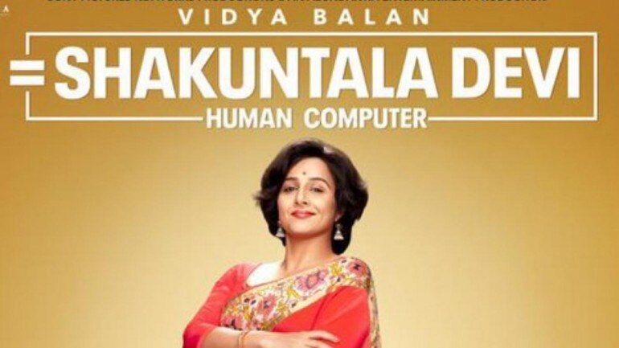

""In one of the better, and more lasting, scenes of the film, Shakuntala Devi, played by a superb Vidya Balan (but more on that later) tells her daughter with just a hint of a smile “Agar amazing ban sakti hoon, toh normal kyun banu?” It’s a confrontation, and this dialogue which Vidya reads with part arrogance and part self-awareness brings the scene to a climactic crescendo. In retrospect, this tiny snatch of dialogue is exactly what the film aspires towards as well. Yet, it hardly ever fulfils it. "

"The film is the rags to riches story of this young, uneducated Tamil girl who goes on to earn the
international title of a Human Computer all by herself. There’s thwarted love, feminist
angst, intergenerational misgivings, and even repressed sexuality. But in an attempt to string
together all these juicy bits of a life so colourful, the film ends up becoming a true display of
thoroughly uninspired writing.
The young Shakuntala is the sole bread earner of the family, and her father quite literally pimps
her ingenious ability to solve immense mathematical calculations in seconds by making her
perform in math shows; in schools across the city. Shakuntala grows up to hate both her
domineering father and her silent mother and it is this conflicted relationship, deftly outlined in
the opening stretch of the film that becomes the driving point for several choices that
Shakuntala ends up making in her adult life. The last straw comes in a fantastic moment in her
early years in London, but the cathartic pain of the scene is largely downplayed by the
exaggerated background score, which keeps popping up throughout the film, destroying
stretches of cinematic visuals that could have easily panned out against communicative silence.
It makes the already glamorous aesthetic even gaudier to the eye and the result is a
work of cinematography that is so engaged in viewing the plasticity of the surrounding beauty
that it fails to amp up the humane empathy that should have been the primary focus of a film of
this stature and nature. If the story is indeed raw and meant to instigate appeal, the supplement features should not be tampered with and overworked to achieve an apparent sense of perfection. The message is conveyed in it’s true form only when the producing team leaves the genuineness be.
The male leads do not help either. In her first romantic relationship, Shakuntala says with eyes
brimming with tears, that she doesn’t want to be loved; she wants to be needed. This is a fierce
statement and a conceit that in itself could be turned into a full-length feature film. Her
relationship with her parents wounded her so deeply that she started defining her existence on
her own rules, on her terms of self-sufficiency. But the scene is framed against the glitz of
streetlight and the impact is hardly lasting. Her second most defining relationship is the one she
shares with her husband, played by a delightful Jishu U Sengupta. Although their courtship
days are well written, with a certain gentleness balanced with careful abandon, the scenes
following their journey into the murky terrain of marriage becomes the victim of uncertain writing.
The film never really is able to make up its mind as to whether it wants the Mother-daughter
relationship or the husband-wife dynamic as its core focus. The shifts are choppy and like with
every biopic, the film too finds the burden of showcasing the brilliance and success of its protagonists. But unlike in Bohemian Rhapsody, where the scenes depicting the tours of Queen turned out to be the most immersive stretches of the film (with the sing-along lyrics and popping hues) the scenes showcasing the brilliance that Shakuntala Devi was, seem repetitive and utterly unimaginative.
After 5 replays, the same setup featuring Balan solving huge sums with numerals flying around in the air does get tiresome.
In the end, the film does settle down on the talent of its two leading ladies to make sense of
this script whose self-aware conceits must have seemed smarter on paper. Vidya Balan, playing
yet another real-life character, ascribes more depth to her character than the writing permits.
Her arrogance doesn’t come off as annoying. It's something that grows on you like her brilliance
and her humour. It’s to Balan’s credit that an unaccounted-for scene like the one where
Shakuntala finally visits her family and cries over her mother’s discarded saree stings as much
as it does. Although there has been literally no build-up to this scene (the film forgets
Shakuntala’s parents for most of the middle) Vidya makes you buy her piercing howl. It is the
sheer sincerity of her performance that makes us root for an empowered, yet a deeply
problematic woman. Still, this is no Dirty Picture.
There, her portrayal of Silk Smita was termed as shattering and indeed it was an aching experience to see her grow through success and love and heartbreak. But there a solidly written script, with witty repartee, supplemented her performance. Vidya as a performer is still brilliant but she can only do so much with a film, whose conceits and ideas seem better when read than when seen. One can almost imagine the makers chuckling at the brilliance of the relationship dynamics depicted.
But that idea never translates into fully realized and effective cinema and that’s exactly where the film falls short.
Sanya Malhotra, despite a questionable wig also bites into a meaty character which is detailed
well. Her arc is clearer and more objective which in retrospect makes sense considering that
the film is a retelling of a life as seen through a daughter’s eyes. Her convictions are better laid
and her motivations easier to buy into and hence its only natural that the viewer sympathises
with her to a greater extent.
Shakuntala Devi, the film is designed with a conscious acknowledgment of the gloss quality of
the storytelling. Scratch the surface and there’s a horde of emotions to be admired and a
plethora of human frailties to be examined. But sadly, despite a winning performance from its
leading lady, the film barely manages to scratch through."